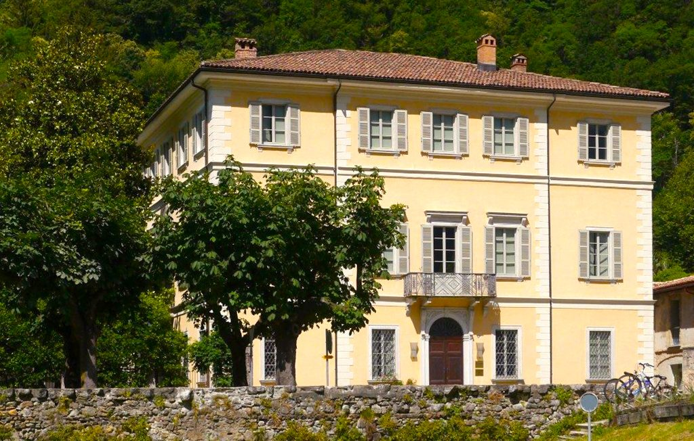

Venue

The workshop will take place at the
Virginia Tech Steger Center in Riva San Vitale, Switzerland. The Steger Center is a restored 18th century villa featuring modern conference facilities, a cafeteria, library, discussion rooms with whiteboard walls, a computer lab, and ample study areas. In addition, the villa’s beautiful garden offers the perfect place to read or relax.
Address: Via Settala 8, 6826 Riva S. Vitale, Switzerland
Lodging
Rooms have been reserved for participants at the Hotel Dante and at the Continental Parkhotel in Lugano, Switzerland. Both hotels are an 8 minute walk from the train station. However, if you are going to Hotel Dante, we strongly recommend you take the funicular at the train station, as the walk is very steep.
Transit to/from Lugano
Trains from Lugano station to Riva San Vitale leave every 15 to 30 minutes. The train ride itself is 15 minutes. Once you arrive at the train station in Riva San Vitale, you can either walk 15 minutes to reach the Steger Center, or you can take a bus. Timetables for trains and buses can be found here.
Transit to/from nearby airports, other lodging options, and information about tourism in the area
See this website for information about transportation to/from nearby international airports, other lodging options, and things to do in the area.